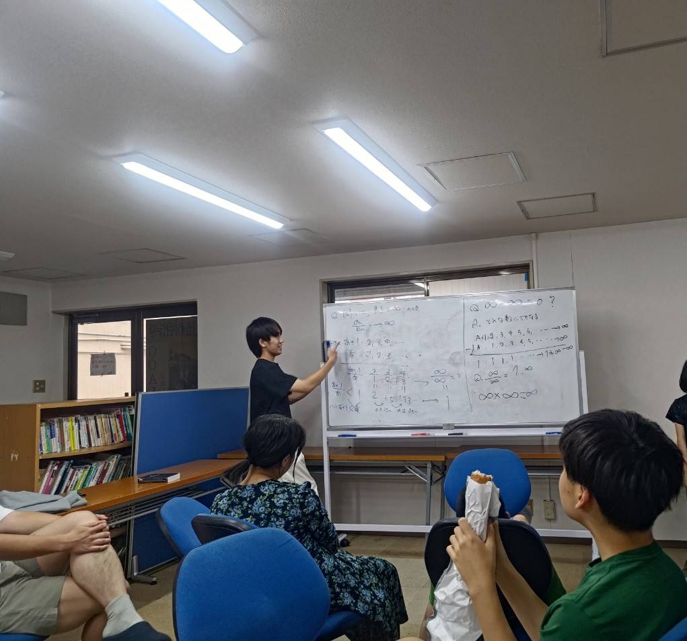
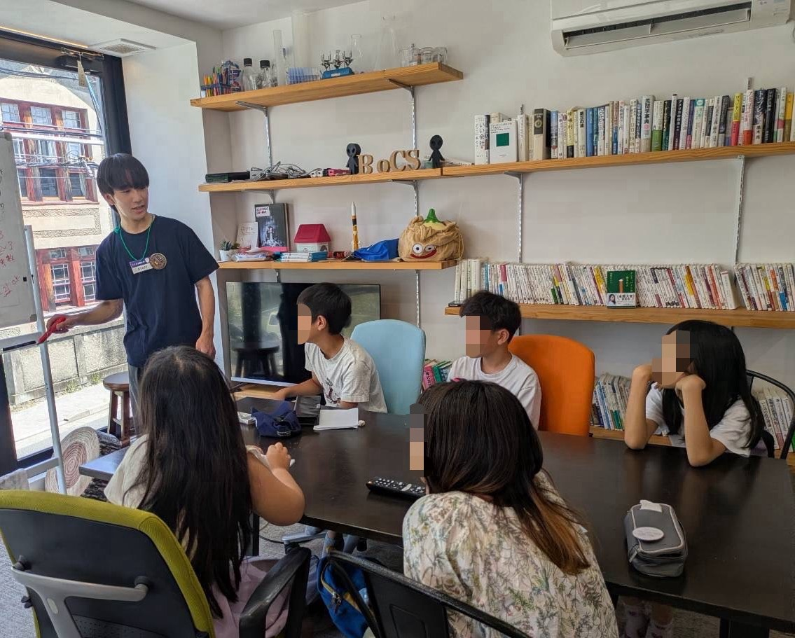
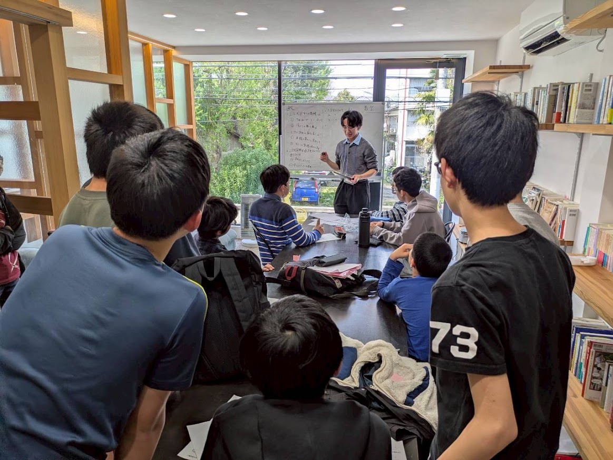

-
ギフテッド（高い理解力や鋭い感性をもち、ときにユニークな思考や言動を見せる）の子どもたちと、「無限」について議論しました。 「∞」は数ではないため四則演算ができないこと、「∞/∞」を見たら発散の速さを考えること、「∞」には濃さがあることなどを紹介しました。 かなり難しい内容だったと思いますが、参加者の関心は引けたかと思います。厳密に説明する代わりに譬えをより利用することを次回以降意識しようと思いました。

-
こども公園大学で数学のレクチャーを行いました。小学生が主な参加者で、一人一人が数学の問題を作ってきてくれました。 計算問題から3の倍数の判定法の発見に接続し、紹介しました。自分が問題に苦戦する様子を見せ、「大学生でも悩むんだ」と、 参加者に親近感を持っていただけたかと思います。

-
春休みこども公園大学２０２６でレクチャーを行いました。 また、運営も一部お手伝いさせていただきました。レクチャーでは、ハウスドルフ次元の導入やフラクタル図形について紹介しました。 実際に紙を持ち出し、それを生徒の目の前で破るというパフォーマンスのおかげで、参加者の注意をぐっと引けました。 レクチャーの終わりに、数人がより詳しく知りたいと質問しに来てくれたり、初めて数学が面白いと思ったというありがたい言葉をいただき、感無量でした。
